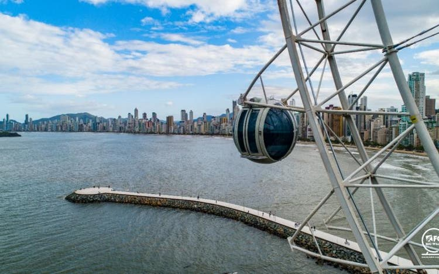

Praia Central
A principal praia de Balneário Camboriú, ideal para banhos de sol e esportes aquáticos.
Parque Unipraias
Um complexo turístico com bondinhos, trilhas e vistas deslumbrantes.

Cristo Luz
Um monumento icônico que ilumina a cidade à noite.

Morro do Careca
Ideal para trilhas e voos de parapente, com vistas espetaculares.
Roda Gigante
Estrada da Rainha, um dos ícones turísticos da cidade.
